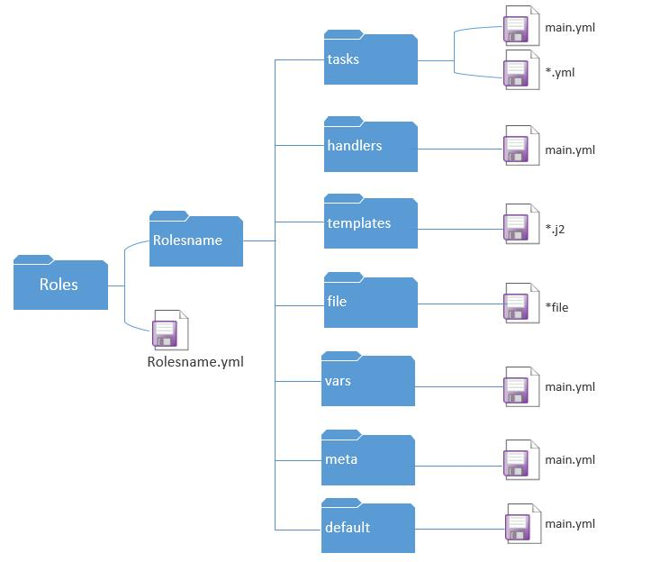
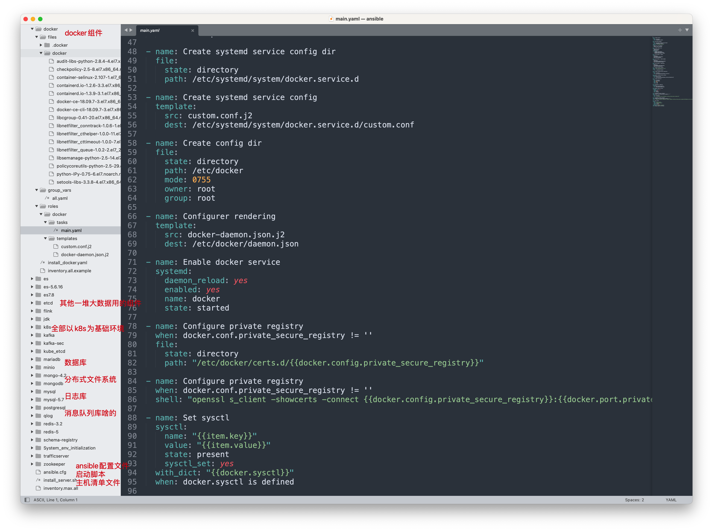
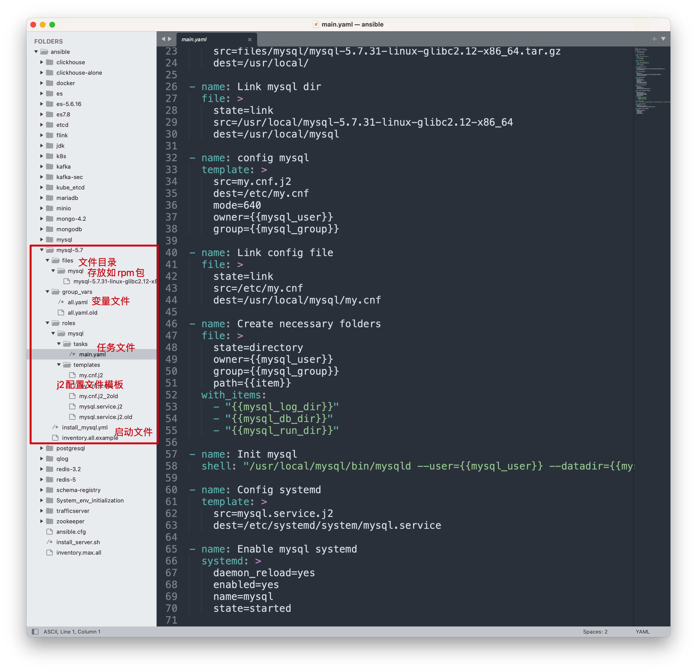

14-ansible-role角色
官网文档
https://docs.ansible.com/ansible/latest/user_guide/playbooks_reuse_roles.html
为什么要用role
之前你部署的nfs、rsync、lsyncd、nginx是如何管理他们的palybook的？
想必是随便放在某一个文件夹里吧
而如果你部署这个备份方案的多个playbook，还使用到了一些额外的文件，如配置文件，网页文件，变量文件等等等，你该怎么管理？不能继续这样随便放，毫无章法吧。
role解决了什么问题
把单个的大剧本，拆分为小剧本，便于维护，修改、使用
完成解耦、结构更清晰、调试更方便
在实际的工作当中，一个完整的项目实际上是很多功能体的组合，如果将所有的功能写在一个playbook中会存在如代码耦合程度高、playbook长而维护成本大、灵活性低等一系列的问题。
使用roles能巧妙的解决这一系列的问题。
roles是ansible1.2版本后加入的新功能，适合于大项目playbook的编排架构。
该如何写role
1.初学时，别想一步到位，先写好剧本，然后再拆分
ansible-role介绍
role、角色用于层次化、结构化的组织多个playbook。
role主要的作用是可以单独的通过一个有组织的结构、通过单独的目录管理如变量、文件、任务、模块、以及处理任务等，并且可以通过include导入使用这些目录。
roles主要依赖于目录的命名和摆放，默认tasks/main.yml是所有任务的人口，使用roles的过程也可以认为是目录规范化命名的过程。
roles每个目录下均由main.yml定义该功能的任务集，tasks/main.yml默认执行所有定义的任务；
roles目录建议放在ansible.cfg中”roles_path”定义的目录下。
[root@master-61 /etc/ansible/roles]#grep 'roles_path' /etc/ansible/ansible.cfg
#roles_path = /etc/ansible/roles
角色目录规划
先来看一个role的结构化目录吧。
一个完整的roles是由task、handlers、files、vars、templates、meta等一系列目录组成，各目录存放不同的文件实现不同的功能，在调用时直接下文件名即可调用。
参考官网即可，且必须按照如下的目录格式来，不是随便定义的
https://docs.ansible.com/ansible/latest/user_guide/playbooks_reuse_roles.html#role-directory-structure
Ansible 角色具有定义的目录结构，其中包含八个主要的标准目录。您必须在每个角色中至少包含其中一个目录。您可以省略角色不使用的任何目录。例如如下的官网示例
# playbooks
site.yml
webservers.yml
fooservers.yml
roles/
common/
tasks/
handlers/
library/
files/
templates/
vars/
defaults/
meta/
webservers/
tasks/
defaults/
meta/
默认情况下，Ansible 将在角色中的每个目录中main.yml查找相关内容的文件（也main.yaml和main）：
tasks/main.yml- 角色执行的任务的主要列表。handlers/main.yml- 处理程序，可以在此角色内部或外部使用。library/my_module.py- 可在此角色中使用的模块（有关更多信息，请参阅在角色中嵌入模块和插件）。defaults/main.yml- 角色的默认变量（有关更多信息，请参阅使用变量）。这些变量在所有可用变量中具有最低优先级，并且可以很容易地被任何其他变量（包括库存变量）覆盖。vars/main.yml- 角色的其他变量（有关更多信息，请参阅使用变量）。files/main.yml- 角色部署的文件。templates/main.yml- 角色部署的模板。meta/main.yml- 角色的元数据，包括角色依赖项。
role综合案例
# yuchaoit.cn ansible-role
site.yml # role入口
nfs_servers.yml # role
rsync_servers.yml # role
roles/ # role规范目录结构
nfs_servers/ # role具体名字
tasks/ # 剧本任务
handlers/ # 剧本里存放的handlers
files/ # 如压缩文件，如需要拷贝的文件
templates/ # 存放配置文件
vars/ # 存放变量文件
rsync_servers/
tasks/
handlers/
files/
templates/
vars/

实践1：部署rsyncd服务
0.思路
1.写好剧本
2.创建角色的目录结构
3.拷贝需要操作的文件对应的结构目录下
4.拆分剧本
1.rsync剧本
- hosts: backup
vars:
user_id: '666'
rsync_user: 'www'
tasks:
# 1.创建www用户和组
- name: 01_create_group
group:
name: "{{ rsync_user }}"
gid: "{{ user_id }}"
# 2.创建www用户
- name: 02_create_user
user:
name: "{{ rsync_user }}"
gid: "{{ user_id }}"
group: "{{ rsync_user}}"
create_home: no
shell: /sbin/nologin
# 3.创建数据目录且授权
- name: 03_createUdata
file:
path: "{{ item }}"
state: direcotry
owner: "{{ rsync_user }}"
group: "{{ rsync_user}}"
mode: "755"
loop:
- /data
- /backup
# 4.安装rsync软件
- name: 04_install_rsync
yum:
name: rsync
state: latest
# 5.复制配置文件与密码文件
- name: 05_copy_config
copy:
src: "{{ item.src }}"
dest: /etc/
mode: "{{ item.mode }}"
notify:
- restart_rsyncd
loop:
- { src:/script/rsyncd.conf,mode:'644'}
- { src:/script/rsync.passwd,mode:'600'}
# 6.启动服务
- name: 06_start_rsync
systemd:
name: rsyncd
state: started
enabled: yes
# 7.重启服务
handlers:
- name: restart_rsyncd
systemd:
name: rsyncd
state: restarted
2.创建role结构目录
[root@master-61 /etc/ansible/roles]#mkdir -p rsync_server/{tasks,handlers,files,templates,vars}
[root@master-61 /etc/ansible/roles]#tree
.
└── rsync_server
├── files
├── handlers
├── tasks
├── templates
└── vars
6 directories, 0 files
[root@master-61 /etc/ansible/roles]#
3.创建playbook到tasks目录
任务么，就是安装rsync服务，生成main.yml即可
tasks/main.yml
- name: install rsync
hosts: backup
tasks:
- name: 01-yum
yum:
name: rsync
state: installed
- name: 03-group
group:
name: www
gid: 1000
- name: 03-user
user:
name: www
uid: 1000
group: www
create_home: no
shell: /sbin/nologin
- name: 04-file
file:
path: /backup
owner: www
group: www
state: directory
- name: 05-copy
copy:
src: "{{ item.src }}"
dest: /etc/
mode: "{{ item.mode }}"
loop:
- { src: '/script/rsyncd.conf', mode: '0644' }
- { src: '/script/rsync.passwd', mode: '0600' }
notify:
- restart rsyncd
- name: 07-systemd
systemd:
name: rsyncd
state: started
handlers:
- name: restart rsyncd
systemd:
name: rsyncd
state: restarted
4. 配置文件放入到files目录
files目录结构
[root@master-61 /etc/ansible/roles/rsync_server/tasks]#tree /etc/ansible/roles/rsync_server/
/etc/ansible/roles/rsync_server/
├── files
│ ├── rsyncd.conf
│ └── rsync.passwd
├── handlers
├── tasks
│ └── main.yml
├── templates
└── vars
5 directories, 3 files
Rsync.passwd
[root@master-61 /etc/ansible/roles/rsync_server]#cat files/rsync.passwd
rsync_backup:yuchao666
rsyncd.conf
[root@master-61 /etc/ansible/roles/rsync_server]#cat files/rsyncd.conf
uid = www
gid = www
port = 873
fake super = yes
use chroot = no
max connections = 200
timeout = 600
ignore errors
read only = false
list = false
auth users = rsync_backup
secrets file = /etc/rsync.passwd
log file = /var/log/rsyncd.log
[mybackup]
comment = chaoge rsync backup!
path = /backup
[data]
comment = yuchaoit.cn rsync!
path = /data
5.拆分handlers
rsync用到的handlers就是在修改完配置文件后，必须要重启这个任务
原本写在单个的大剧本中，现在可以单独写出来然后维护
[root@master-61 /etc/ansible/roles/rsync_server]#cat handlers/main.yml
- name: restart rsyncd
systemd:
name: rsyncd
state: restarted
6.拆分vars
提取出安装rsync脚本中使用到的变量，如用户信息
[root@master-61 /etc/ansible/roles/rsync_server]#cat vars/main.yml
user_id: '666'
rsync_user: 'www'
7. 优化tasks任务文件main.yml
超哥教你写role的口诀
该拆的全给拆开
如何拆，以role提供的目录结构拆，对应着拆
- 对应的目录填入对应的数据
- 内容需要反复写的定义为变量
- 如果要填写多个数据，如文件列表，可以写loop循环
# 1.创建www组
- name: 01_create_group
group:
name: "{{rsync_user}}"
gid: "{{user_id}}"
# 2.创建www用户
- name: 02_create_user
user:
name: "{{rsync_user}}"
uid: "{{user_id}}"
group: "{{rsync_user}}"
create_home: no
shell: /sbin/nologin
# 3.创建数据目录并更改授权
- name: 03_create_data
file:
path: "{{item}}"
state: directory
owner: "{{rsync_user}}"
group: "{{rsync_user}}"
mode: '755'
loop:
- /data
- /backup/
# 4.安装rsync软件
- name: 04_install_rsync
yum:
name: rsync
state: latest
# 5.复制文件
- name: 05-copy config
copy:
src: "{{item.src}}"
dest: /etc
mode: "{{item.mode}}"
notify:
- restart rsyncd
loop:
- {src: rsyncd.conf,mode: '644'}
- {src: rsync.passwd,mode: '600'}
# 6. 启动服务
- name: start service
systemd:
name: rsyncd
state: started
enabled: yes
8.编写启动role文件
- 注意启动文件的路径，和roles平级
- 最终是以tasks/main.yml作为入口
[root@master-61 /etc/ansible]#cat /etc/ansible/rsync_server.yml
- hosts: backup
roles:
- rsync_server
9.检查roles所有文件
[root@master-61 /etc/ansible]#tree /etc/ansible/roles/rsync_server/
/etc/ansible/roles/rsync_server/
├── files
│ ├── rsyncd.conf
│ └── rsync.passwd
├── handlers
│ └── main.yml
├── tasks
│ └── main.yml
├── templates
└── vars
└── main.yml
5 directories, 5 files
10.调试运行role
[root@master-61 /etc/ansible]#ansible-playbook -C rsync_server.yml
实际执行，安装rsync服务
[root@master-61 /etc/ansible]#ansible-playbook rsync_server.yml
至此，关于安装rsync服务的roles已经写好了，主要就是区别于纯手写plabook，解决纯playbook的问题
- 提供files、handlers、tasks、vars单独放置各自需要的yaml
- 把一个臃肿的大playbook，拆成小部分，分门别类的管理。
实践2：部署sshd服务
1.思路
1.需要新知识role中提供的template模板功能，编写j2文件
2.主体功能写在tasks中
3.调试运行
2.创建新的role目录
[root@master-61 /etc/ansible]#cd roles/
[root@master-61 /etc/ansible/roles]#mkdir sshd_server/{tasks,handlers,files,templates,vars} -p
3.编写jinja2模板文件
这是一个特有的模板语言，主要作用就是能让普通的文件，能读取程序设置的变量，用模板语法，动态替换数据。
语法规则
1.必须是以.j2结尾的文件
2.必须放入在template目录下
3.使用的ansible模块是template模块
实践
1.拷贝sshd配置文件，改名为.j2后缀，放入template目录
[root@master-61 /etc/ansible/roles]#cp /etc/ssh/sshd_config /etc/ansible/roles/sshd_server/templates/sshd_config.j2
2.修改配置文化语法，替换为jinja2的语法
比如你部署一个sshd服务，你希望动态的修改sshd的端口，那么配置文件就不能写死固定的数字；
而可以采用
- j2模板文件
- 变量文件
- 两者结合，实现在ansible部署中，方便的修改配置文件
[root@master-61 /etc/ansible/roles]#grep '^Port' /etc/ansible/roles/sshd_server/templates/sshd_config.j2
Port {{ ssh_port }}
4.编写变量文件
角色定义的yml文件，就无须再写vars关键字定义变量， 默认通过这个文件夹就可以识别是变量文件了
[root@master-61 /etc/ansible/roles/sshd_server]#cat vars/main.yml
ssh_port: '22'
5.编写handlers文件
用于确保修改配置文件后，重启服务的任务
[root@master-61 /etc/ansible/roles/sshd_server]#cat handlers/main.yml
- name: restart sshd
systemd:
name: sshd
state: restarted
6.编写主任务tasks文件
启动sshd服务的主体剧本如下，只不过以前所有的参数都是固定写死的，现在全拆开了，更容易修改了
细节提示
- 配置文件的拷贝，不是copy固定死的文件内容，而是template模块，利用j2模板文件，动态设置配置文件的值
[root@master-61 /etc/ansible/roles/sshd_server]#cat tasks/main.yaml
# 1.复制文件
- name: 01_copy_sshd
template:
src: sshd_config.j2
dest: /etc/ssh/sshd_config
mode: '600'
backup: yes
notify:
- restart sshd
# 2.启动服务
- name: start sshd service
systemd:
name: sshd
state: started
enabled: yes
7.最终roles目录
[root@master-61 /etc/ansible/roles/sshd_server]#tree
.
├── files
├── handlers
│ └── main.yml
├── tasks
│ └── main.yaml
├── templates
│ └── sshd_config.j2
└── vars
└── main.yml
8.编写启动role文件
注意该文件，存放于/etc/ansible下，和roles同级
[root@master-61 /etc/ansible]#cat sshd_server.yml
- hosts: backup
roles:
- sshd_server
[root@master-61 /etc/ansible]#ls
ansible.cfg hosts roles rsync_server.yml sshd_server.yml
9.调试测试role
确保没有错误，可以正确发生change修改动作即可。
[root@master-61 /etc/ansible]#ansible-playbook -C sshd_server.yml
实践3： 部署nfs服务
1.思路
1.拷贝nfs服务端配置文件，生成templates目录下的j2模板文件，用于变量替换配置文件信息
2.编写handlers
3.编写tasks
4.编写vars
5.编写role启动文件
2.创建role目录结构
[root@master-61 /etc/ansible/roles]#mkdir nfs_server/{tasks,handlers,files,templates,vars} -p
3.创建jinja模板文件
[root@master-61 /etc/ansible/roles]#cat nfs_server/templates/exports.j2
/data {{ server_ip }}(rw,sync,all_squash,anonuid=66,anongid=666)
4.创建变量文件
[root@master-61 /etc/ansible/roles]#cat nfs_server/vars/main.yml
server_ip: '172.16.1.0/24'
5.编写handlers文件
[root@master-61 /etc/ansible/roles]#cat nfs_server/handlers/main.yml
- name: restart nfs
systemd:
name: nfs
state: restarted
6.编写tasks任务文件
[root@master-61 /etc/ansible/roles]#vim nfs_server/tasks/main.yml
# 1.创建www组
- name: 01-add group
group:
name: www
gid: '666'
# 2.创建www用户
- name: 02-useradd
user:
name: www
create_home: no
shell: /sbin/nologin
uid: '666'
# 3.安装nfs
- name: 03-nfs install
yum:
name: nfs-utils
state: latest
# 4.拷贝配置文件
- name: 04-cp
template:
src: exports.j2
dest: /etc/exports
notify:
- restart nfs
# 5.创建数据目录且授权
- name: create data dir
file:
path: "{{ item }}"
state: directory
owner: www
group: www
mode: '755'
loop:
- /data
- /backup
# 6. 启动rpcbind服务
- name: start prcbind
service:
name: rpcbind
state: started
# 7.启动nfs服务
- name: start nfs
service:
name: nfs
state: started
# 8.开机启动
- name: enable rpcbind
systemd:
name: rpcbind
enabled: yes
- name: enable nfs
systemd:
name: nfs
enabled: yes
7.编写启动role文件
注意就是roles的值，和roles目录下的文件夹对应
[root@master-61 /etc/ansible/roles]#cat /etc/ansible/nfs_server.yml
- hosts: nfs
roles:
- nfs_server
8.测试role执行
[root@master-61 /etc/ansible/roles]#ansible-playbook -C /etc/ansible/nfs_server.yml
总结roles角色用法
1.roles有固定的格式，需要创建固定的文件夹结构，以及每个文件夹都对应的固定的作用
2.写roles其实就是改造、拆分以前写的部署服务的playbook
3.最后就是注意细节，语法，别敲错了单词，出错了看日志报错，对应出错的文件，按照正确规则，编写即可
4.动手练习，完成rsyncd，nfs，sshd服务的部署，理解roles的用法
生产环境下的ansible-role
给大家看看于超老师维护的role，了解下为什么让你学role，以及给你讲解这些知识点，理解role的目录结构。
1.ansible总目录
2.涉及的组件列表
也就30多个吧，花一个月把剧本全看明白就行了，没什么高级用法，都是超哥讲解的ansible模块，以及那些高级语法。
- ansible模块
- playbook语法、yaml、高级语法
- role规范

3.听超哥指挥，能打胜仗
我说的对吗 老铁们。
[汗]这个图的意思就是想告诉你们，工作里的运维部署内容，必然会更复杂，更多，但是只要你把课堂上讲的语法学会，作业做出来，就能搞定工作里的活。也就是我贴的这个图，里面的语法应该是能看懂的吧。
然后就是拿着这个剧本去部署公司的产品，出了问题，自己要会修改这个剧本
4.例如安装mysql的角色
